Dineout, from first tap to a confirmed table.
How Swiggy Dineout moves a new Android user through awareness, install, activation and a first booking, then keeps the loop turning. What exists, why it likely exists, and which metric each choice protects.
Scroll: 13 slides, one journey ↓
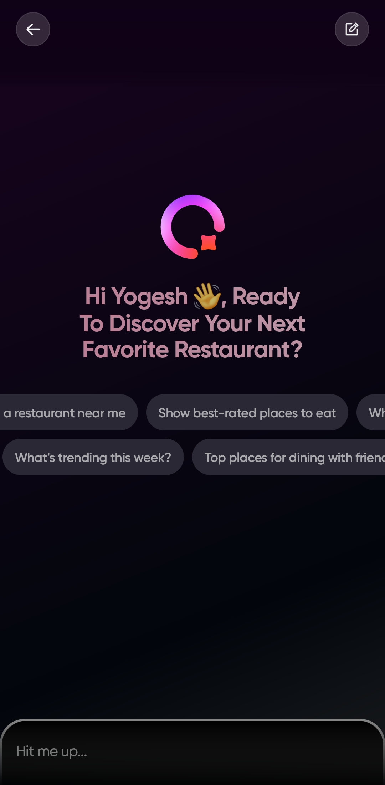
The funnel is tight. The loop is cleverer.
I walked Dineout end to end as a brand new user, from a Play Store search to a confirmed table, then cancelled a booking on purpose to study that flow too.
A funnel that keeps clearing its own path
Awareness arrives through word of mouth and the Swiggy home tab. The Play Store listing answers doubts before install, and onboarding removes friction: prefilled number, editable OTP, SMS or call fallback, OS-native permissions.
Retention designed in from the confirmation page
Split-bill explained at booking time, a Pay Bill Now button that unlocks at the booking hour, Dine Cash that expires within 2 weeks, and a cancellation page that shows exactly what you are giving up.
The undecided user
Category pages lead with 5 unlabelled, unpersonalised restaurants. A clear, personalised "Trending near you" block would help browsers decide faster. Proposed in slide 12.
The decided user is served beautifully. The undecided user is the open ground.
My read after one full run. Offered as a hypothesis, not tested findings.One journey, one lens, three questions
Dineout, a table reservation app
Restaurant table booking and bill payment on Android, installed from the Play Store. Dineout sits inside the Swiggy ecosystem, with a dedicated tab on the Swiggy home page.
Awareness to rebooking
Awareness, acquisition, activation, first booking, post-booking, cancellation, and the retention mechanics wrapped around them.
How, why, and what it supports
For every feature: how it exists, why it likely exists, what the experience felt like, and which product metric it supports.
What I set out to answer
How intuitive is the journey, and can a user book a table easily? Which lifecycle stage does each feature serve? What is the time to value?
Two doors in, both unlocked by borrowed trust
A user who types "Dineout" into the Play Store did not get there by accident.
Word of mouth
A friend or colleague booked a table through Dineout and said so. The branded search that follows is the footprint of that conversation.
The Swiggy home tab
Swiggy's home page runs four tabs: Restaurant booking, Instamart, Dineout and Swiggy. Tapping Dineout hands the user over, which puts Dineout in front of a large base already comfortable ordering food online.
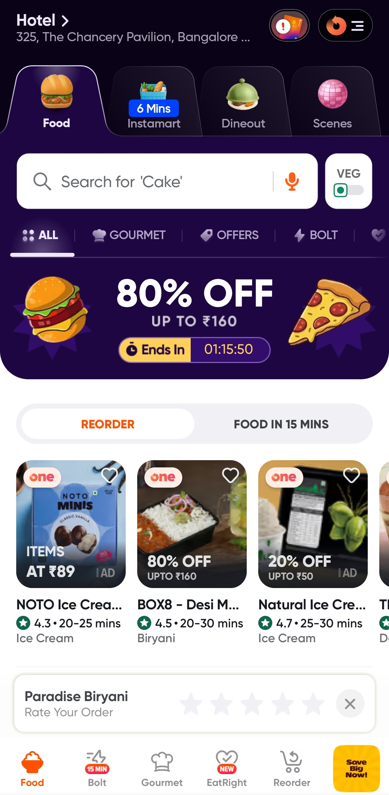
Both channels carry borrowed trust: a friend's recommendation, or a platform the user already opens daily.
The last screen before install answers objections
Searching "Dineout" surfaces a sponsored District result first, then the real listing.


Rating, age rating, size, screenshots
The listing is the last step before the user commits. Rating, the 3+ age rating, app size and walkthrough screenshots reduce drop-off risk and set expectations for life after install.
Objection handling without leaving the store
Suggested questions cover how the app works and whether data is protected. I asked my own pre-install concern: will I have to pay for booking? The answer was clear, and a hesitant user clears the exact doubt that stops an install.
Three safety nets under one login step
Every step before the first booking is a drop-off risk, so the number and OTP flow gets extra care.

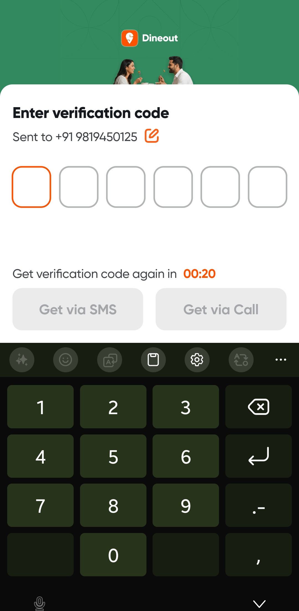
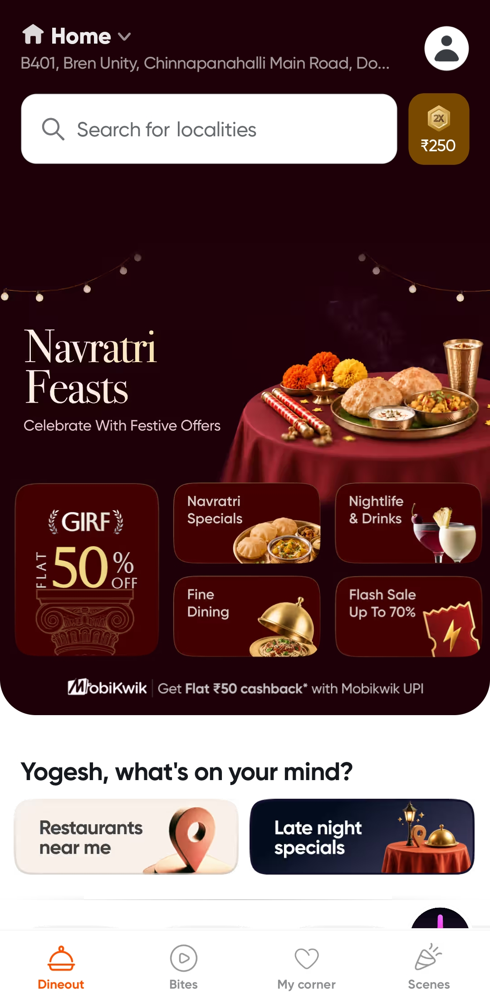
Google offers the number
The first screen prompts me to prefill the number linked to my Google account. There is also a skip, which lands the user straight on the home page. I chose to prefill.
The OTP screen lets you fix the number
If the code never arrives, the number can be edited without going back, so a typo does not restart the journey.
SMS, or a call
If the code does not arrive in time, the user can choose to receive it by SMS or by call. A second channel protects the verify step.
Permissions, earned one explained ask at a time

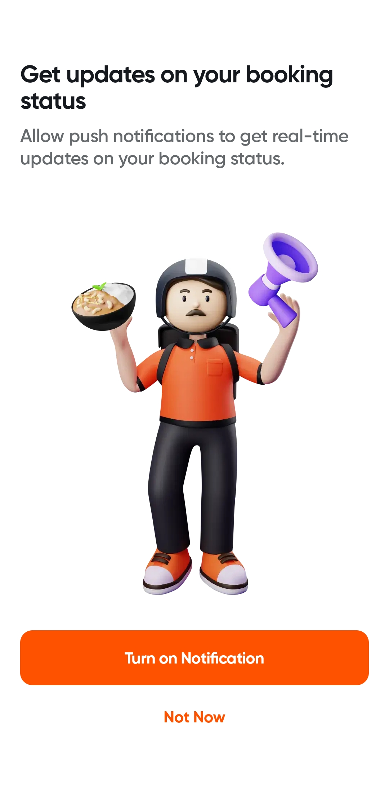
Precise or approximate, the user chooses
After OTP, a select location page offers manual entry, a new address, or device location. The Android prompt then asks for precise or approximate location, with While using the app, Only this time or Don't allow. The prompt is Android's design, not Dineout's, and that familiarity is the point. Discovery depends on location, so asking early personalises the home page right away.
A full screen that sells the value first
Instead of a bare system pop-up, Dineout uses a full screen: "Get updates on your booking status", with an illustration of a delivery partner and a loudspeaker-style device, then Turn on notifications or Not now. Explaining the value before the system dialog should improve opt-in.
A home page that knows what week it is
During my run the Navratri feast banner led, with a GIRF banner offering flat 50% off, plus a locality search bar showing my precise address. The full home screen opens the deck above.
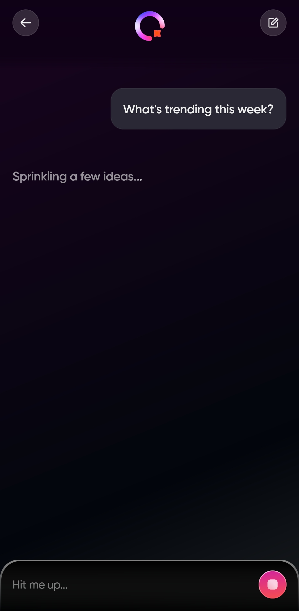
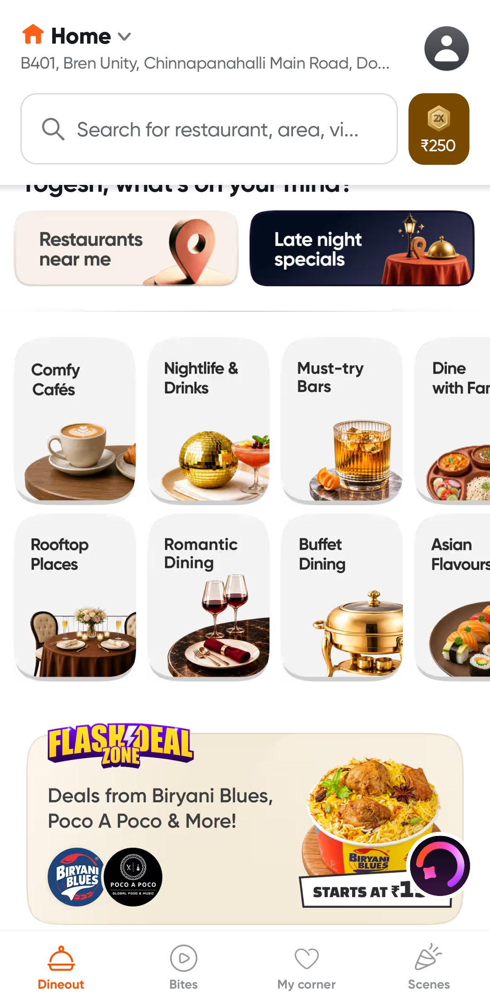
Navratri specials and a flash deal zone
Four festival options lead the page, then well-categorised rows: comfy cafes, nightlife, drinks and more. Ongoing offers get their own flash deal zone.
Value without hunting
The GIRF banner and the flash zone put live offers on the first screen, so deal-hunters see value immediately.
Two rows of prompts, moving
A chat button sits bottom right. Open it and two rows of prompts slide slowly in opposite directions at different speeds: "What are the best-rated places to eat?", "What's trending this week?"
Instead of a long list of questions, the moving rows say there is a lot to ask, while keeping the screen clean.
Why I think the assistant opens with moving prompt rows.Cards that carry enough to decide
On Nightlife and Drinks: 5 surfaced restaurants, then a featured section. I picked Oss Brewery.
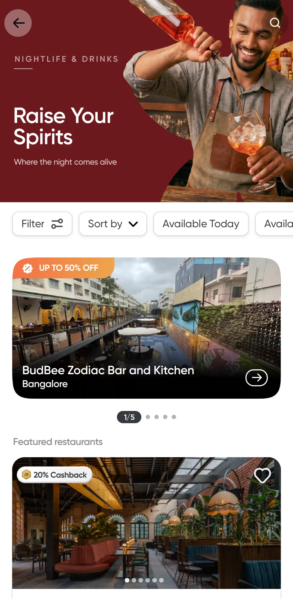
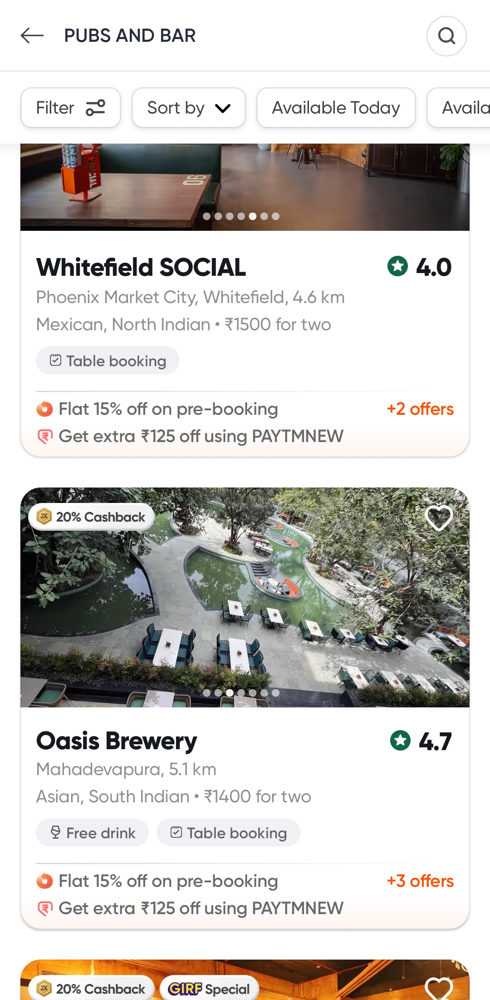
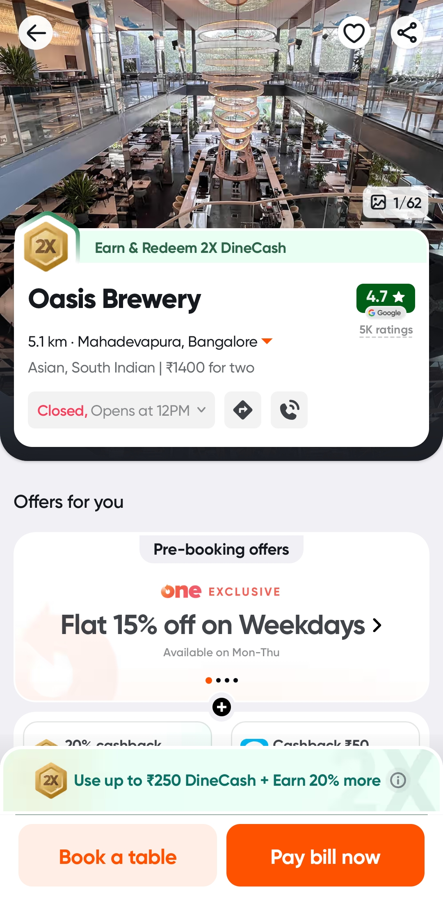
Everything a decision needs
Name, location, distance, cuisine, cost, rating and what it offers: flat 15% on pre-booking, free drinks, 20% cash, the top 2 offers and a "+2 or +3 more" count.
Oss Brewery, decision-ready
Images that change every 2 seconds, specific offers, quick actions for menu, directions and call, and two CTAs straight away: Book a table and Pay bill now. A user who already knows the place can search, book, and be done.
The unlabelled top 5
It is unclear whether the surfaced 5 are trending, top-rated or promoted. I felt unsure what to choose. More in the opportunity slide, 12.
Six screens, one question each
Each screen asks one thing, and the user always knows where they are in the flow.
From the restaurant page
One screen, two picks
One tap forward
Time, guests, location, T&Cs
Payment first if needed
Final confirmation
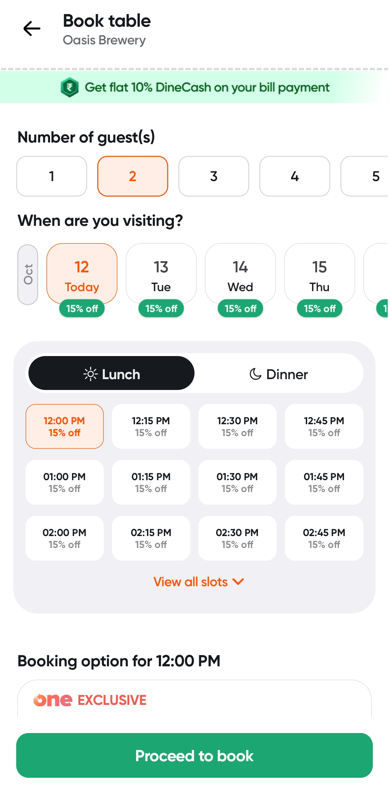
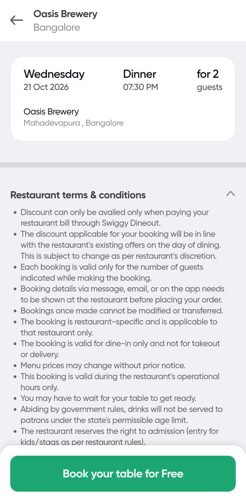
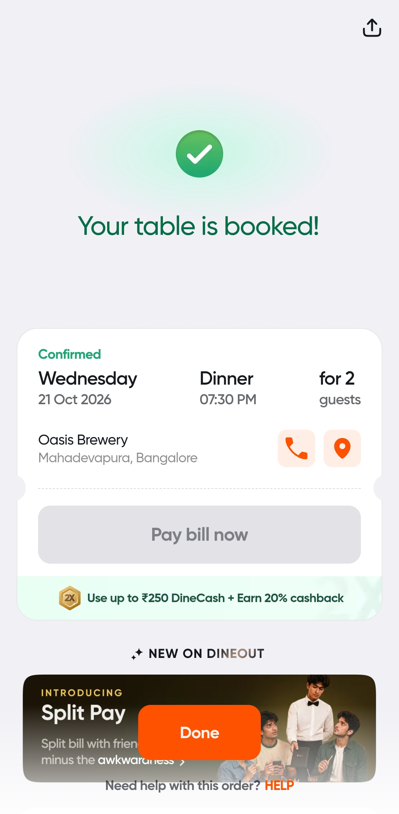
Open app to confirmed table
Measured from opening the app after install to a confirmed booking. Install time excluded. Single-user run with a stopwatch: me.
Direct booking, restaurant already chosen. Timing pending my next measured run.
Browse Dineout to decide, then book.
The confirmation page starts selling the next visit
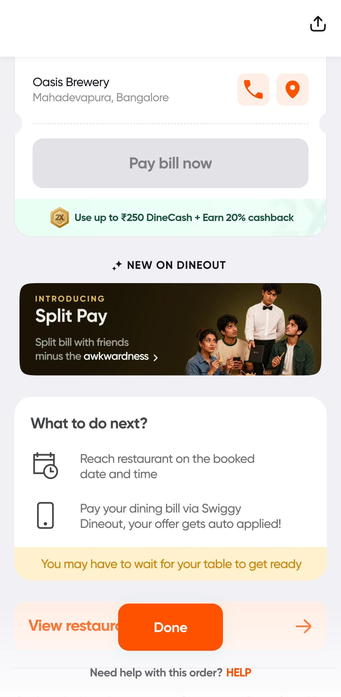
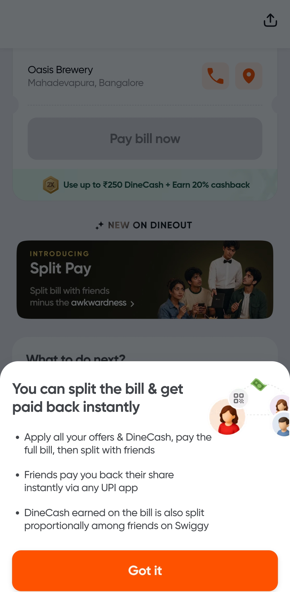
Call, or re-check the location
The two things people actually want right after booking, one tap away. A what-to-do-next thread keeps the user oriented through the visit.
Unlocks at the booking time
For a 7:30 pm booking on 21 October, the button turns on at 7:30 pm that day. The bill payment stays inside Dineout, where the offer lives.
Solved at booking time, not at the table
Split-bill is explained here because it is used at payment. In a group, someone always worries about bearing the whole cost, and the Dineout offer is split across the group too.
Showing split-bill at booking time answers an emotional question early: no one person carries the table.
Why I think it earns space on the confirmation page.Even the goodbye is working on the comeback
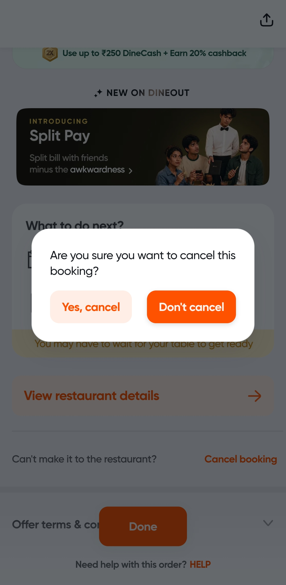
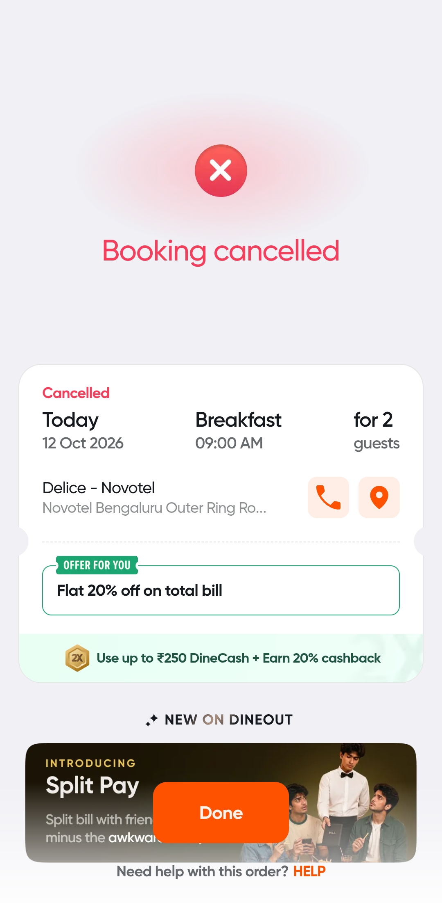
The preferred action sits where the thumb rests
Yes, Cancel is de-emphasised on the left. Don't Cancel is highlighted on the right, where a right-handed thumb lands by default. The hierarchy says: please stay.
Money that melts in two weeks
Book and visit in week 1, earn Dine Cash, and it expires within 2 weeks. The nudge is simple: come back before it does. Loss aversion, on a schedule.
40% of the screen is the offer you just lost
It could just say your booking is cancelled. Instead it shows: "Use up to 250 Dine Cash + earn 20% cashback". Loss framing at the exact moment of goodbye, and the same offer follows the user across booking and cancellation pages.
For the undecided user: Trending near you
The browsing experience is the biggest gap. This is my proposal, clearly labelled: it is not in the app today.
An unlabelled top 5
A browser without a restaurant in mind picks a category like Nightlife and Drinks and sees 5 surfaced restaurants. Trending? Top-rated? Promoted? Unclear. The chat could help, but only if the user starts the conversation.
A personalised, labelled block, upfront
Replace the unlabelled top 5 with "Trending near you", built on location and city plus booking, reservation and click history to read intent and taste. Shown upfront, no chat needed to start.
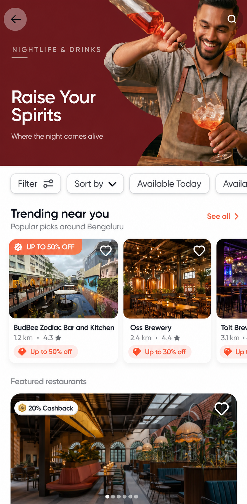
Where Dineout stands, stage by stage
| Stage | My verdict |
|---|---|
| Awareness | Very strong. Word of mouth plus the Swiggy home tab, and a Play Store presence that captures branded searches. |
| Acquisition | The listing answers doubts before install; Ask Play handles objections in place. Watch the sponsored District slot above it. |
| Activation | Friction removed at every step: prefill, editable OTP, SMS or call fallback, OS-native permissions, an explained notification ask. |
| Booking | Short and decision-ready. Cards carry enough to choose, and each screen asks one thing. |
| Engagement & retention | Designed in from confirmation onward: split-bill, timed Pay Bill Now, expiring Dine Cash, a loss-framed cancellation page. |
| Browsing discovery | The gap. Unlabelled, unpersonalised top 5 on category pages. See my proposal in slide 12. |
Retention is not a screen in this app. It is every screen.
Split-bill, expiring Dine Cash and a loss-framed goodbye all pull in the same direction.